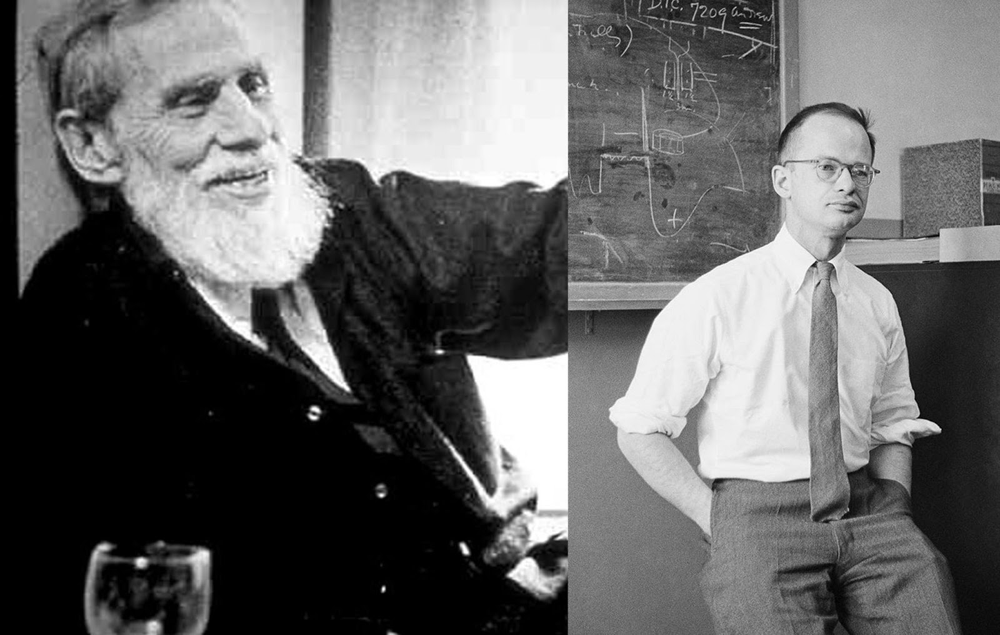
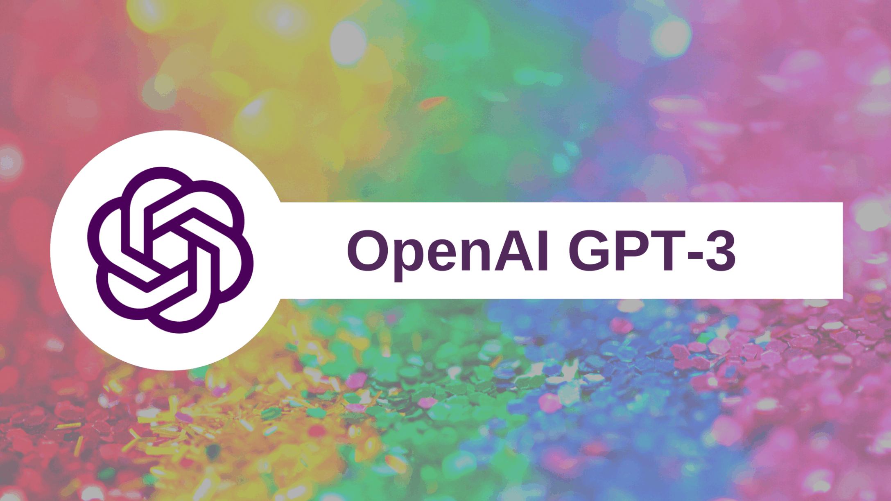

Introduction
Deep learning is a machine learning technique that teaches computers what to do what comes
naturally human: learn by example. Deep learning is a key technology behind driverless cars,
enabling them to recognize stop sign, or to distinguish a pedestrian from a lamppost. It is the
key to voice control in consumer devices like phones, tablets, TVs, and hands-free speakers. Deep
learning is getting lots of attention lately and for good reason. It’s achieving results that were
not possible before. Deep learning is Large Neural Networks. In early talks on deep learning,
Andrew 1 described deep learning in the context of traditional artificial neural network. In the
2013 talk titled "Deep Learning, Self-Taught Learning and Unsupervised Feature Learning", he
described the idea of deep learning as using brain simulations, hope to:
- Make learning algorithms much better and easier to use.
- Make revolutionary advances in machine learning and AI.
History
1943: Warren McCulloch and Walter Pitts created a computational model for neural networks based on mathematics and algorithms called threshold logic.
1965: Alexy Grigoryevich Ivakhnenko and Valentin Grigor’evich Lapa made the earliest efforts in developing Deep Learning algorithms using models with polynomial(complicated equations) activation functions, that were then analyzed statistically.
1980: Kunihiko Fukushima proposed the Neoconitron, hierarchical, multilayered artificial neural network that has been used for handwriting recognition and other pattern recognition problems.
1989: Scientists were able to create algorithms that used deep neural networks, but training times for the systems were measured in days, making them impractical for real-world use.
1992: Juyang Weng published Cresceptron, a method for performing 3-D object recognition automatically from cluttered scenes.
Mid-2000s: The term "deep learning" began to gain popularity after a paper by Geoffrey Hinton and Ruslan Slakhutdinov showed how a many-layered neural network could be pre-trained on layer at a time.
2009: NIPS Workshop on Deep Learning for Speech Recognition discovered that with a large enough data set, the neural network don’t need pre-training, and the error rates frop significantly.
2012: Artificial pattern-recognition algorithms achieve human-level performance on certain tasks. And Google’s deep learning algorithm discovers cats.
Working Principles
Deep learning’s major mechanism is based on neural networks. Like animals, our estimator AI’s brain has neurons. They are represented by circles. These neurons are inter-connected. The neurons are grouped into three different types of layers:
- Input Layer
- Hidden Layer(s)
- Output Layer
Achievements
-
Google Neural Machine Translation
In 2017, Google announced thte release of a new model of Google Translate. The network ar- chitecture used that the company described in detail is RNN (Recurrent Neural Network). The outcome improved closing down the gap between humans with the accuracy of the translation by 55-85.
-
GPT-3 - The Biggest Achievement Of NLP: The Language Of AI
Generative Pre-trained Transformer 3 is an autoregressive language model that uses deep learning to produce human-like text. It is the third-generation language prediction model in the GPT-n series ( and the sucessor to GPT-2) created by OpenAI, a San Francisco- based artificial intel- ligence research laboratory. GPT-3’s full version has a capacity of 175 billion machine learning parameters. GPT-3 , which was introduced in May 2020, and was in beta testing as of July 2020, is part of a trend in natural language processing (NLP) systems of pre-trained language representations. Before the release of GPT-3, the largest language model was Microsoft’s Turing NLG, introduced in February 2020, with a capacity of 17 billion parameters - less than a tenth of GPT-3's.

-
Computer Vision:
GANs (Generative Adversarial Networks)
That is one of the hottest topics in deep learning. The idea is in competition between two networks: the generator and discriminator. The first network creates a picture and the second one tries to understand whether the picture is generated or real. During training, the generator from a random vector(noise) generates an image and feeds it to the input of the discriminator, which says whether it is fake or not. The discriminator is also given real images from the dataset. Consequently, the discriminator wins and the training stagnates. However, the advantage of the system is that we can solve problems in which it is difficult for us to set the loss-function (for example, improving the quality of the photo)−we give it to the discriminator.